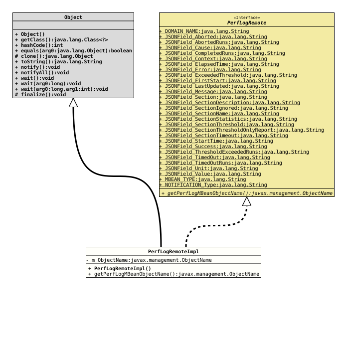

Class PerfLogRemoteImpl
java.lang.Object
org.tquadrat.foundation.perflog.remote.internal.PerfLogRemoteImpl
- All Implemented Interfaces:
AutoCloseable, PerfLogRemote
@ClassVersion(sourceVersion="$Id: PerfLogRemoteImpl.java 1229 2026-05-04 19:11:41Z tquadrat $")
@API(status=INTERNAL,
since="0.25.0")
public final class PerfLogRemoteImpl
extends Object
implements PerfLogRemote
The implementation of
PerfLogRemote.
- Author:
- Thomas Thrien (thomas.thrien@tquadrat.org)
- Version:
- $Id: PerfLogRemoteImpl.java 1229 2026-05-04 19:11:41Z tquadrat $
- Since:
- 0.25.0
- UML Diagram
-

UML Diagram for "org.tquadrat.foundation.perflog.remote.internal.PerfLogRemoteImpl"
{kind=link}
-
Nested Class Summary
Nested ClassesModifier and TypeClassDescriptionprivate static final recordThe janitor that takes care of the housekeeping for an instance ofPerfLogRemotein case that was not properly closed. -
Field Summary
FieldsModifier and TypeFieldDescriptionprivate final Cleaner.CleanableTheCleaner.Cleanablefor this instance.private static final CleanerThe cleaner that is used to finalise instances ofPerfLogRemoteImpl.private final MBeanServerConnectionThe connection to the MBean.private booleanThe flag the indicates whether this remote is (still) active.private final PerfLogRemoteImpl.JanitorThe caretaker for this instance.private static final ObjectNameThe object name for the Performance Logging MBean.Fields inherited from interface PerfLogRemote
DOMAIN_NAME, JSONField_Aborted, JSONField_AbortedRuns, JSONField_Cause, JSONField_CompletedRuns, JSONField_Context, JSONField_ElapsedTime, JSONField_Error, JSONField_ExceededThreshold, JSONField_FirstStart, JSONField_LastUpdated, JSONField_Message, JSONField_Section, JSONField_SectionDescription, JSONField_SectionIgnored, JSONField_SectionName, JSONField_SectionStatistics, JSONField_SectionThreshold, JSONField_SectionThresholdOnlyReport, JSONField_SectionTimeout, JSONField_StartTime, JSONField_Success, JSONField_ThresholdExceededRuns, JSONField_TimedOut, JSONField_TimedOutRuns, JSONField_Unit, JSONField_Value, MBEAN_TYPE, NOTIFICATION_Type -
Constructor Summary
ConstructorsConstructorDescriptionPerfLogRemoteImpl(JMXServiceURL url, NotificationListener listener) Creates a new instance ofPerfLogRemoteImpl. -
Method Summary
Modifier and TypeMethodDescriptionprivate final booleanChecks whether this performance logging remote is still active.final voidclose()static final PerfLogRemoteImplconnect(JMXServiceURL url, NotificationListener listener) Connects to the Performance Logging MBean specified through the givenJMXServiceURLand theObjectNamereturned bygetPerfLogMBeanObjectName().final MBeanInfoReturns theMBeanInfofor the performance logging MBean.static final ObjectNameReturns theObjectNamefor the Performance Logging MBean.getPerformanceSection(String name) Returns the status for the given performance section.final String[]Returns a list of the currently defined performance sections.
-
Field Details
-
m_Cleanable
TheCleaner.Cleanablefor this instance. -
m_Connection
The connection to the MBean. -
m_IsActive
The flag the indicates whether this remote is (still) active. -
m_Janitor
The caretaker for this instance. -
m_Cleaner
-
m_ObjectName
The object name for the Performance Logging MBean.
-
-
Constructor Details
-
PerfLogRemoteImpl
public PerfLogRemoteImpl(JMXServiceURL url, NotificationListener listener) throws InstanceNotFoundException, IOException Creates a new instance ofPerfLogRemoteImpl.- Parameters:
url- The service URL for the connection to the MBean server.listener- The notification listener that receives the performance messages.- Throws:
IOException- Unable to connect to the MBean server.InstanceNotFoundException- There is no performance logging MBean registered on the MBean server.
-
-
Method Details
-
checkActive
Checks whether this performance logging remote is still active. Throws an
IllegalStateExceptionif not.- Returns:
trueif the instance is still active.- Throws:
IllegalStateException-close()was already called on this instance.
-
close
- Specified by:
closein interfaceAutoCloseable- Specified by:
closein interfacePerfLogRemote
-
connect
public static final PerfLogRemoteImpl connect(JMXServiceURL url, NotificationListener listener) throws InstanceNotFoundException, IOException Connects to the Performance Logging MBean specified through the given
JMXServiceURLand theObjectNamereturned bygetPerfLogMBeanObjectName().- Parameters:
url- The JMX service URL.listener- The notification listener.- Returns:
- A new instance of
PerFlogRemote. - Throws:
IOException- Unable to connect to the MBean server.InstanceNotFoundException- There is no performance logging MBean registered on the MBean server.
-
getMBeanInfo
public final MBeanInfo getMBeanInfo() throws IllegalStateException, ReflectionException, InstanceNotFoundException, IntrospectionException, IOExceptionReturns theMBeanInfofor the performance logging MBean.- Specified by:
getMBeanInfoin interfacePerfLogRemote- Returns:
- The
MBeanInfo. - Throws:
IllegalStateException- The instance was already closed.ReflectionException- An exception occurred when trying to invoke the methodgetMBeanInfo()of a Dynamic MBean.InstanceNotFoundException- The MBean specified was not found.IntrospectionException- An exception occurred during introspection.IOException- A communication problem occurred when talking to the MBean server.
-
getPerfLogMBeanObjectName
Returns theObjectNamefor the Performance Logging MBean.- Returns:
- The object name for the MBean.
-
getPerformanceSection
public String getPerformanceSection(String name) throws IllegalStateException, ReflectionException, InstanceNotFoundException, MBeanException, IOException Returns the status for the given performance section.
- Specified by:
getPerformanceSectionin interfacePerfLogRemote- Parameters:
name- The name of the performance section.- Returns:
- The status of the performance section, or a message indicating what failed in case of error, as a JSON String.
- Throws:
IllegalStateException- The instance was already closed.ReflectionException- An exception occurred when trying to invoke the methodgetAttribute()of a Dynamic MBean.InstanceNotFoundException- The MBean specified was not found.MBeanException- Wraps an exception thrown by the MBean method.IOException- A communication problem occurred when talking to the MBean server.
-
getPerformanceSections
public final String[] getPerformanceSections() throws IllegalStateException, ReflectionException, AttributeNotFoundException, InstanceNotFoundException, MBeanException, IOExceptionReturns a list of the currently defined performance sections.
- Specified by:
getPerformanceSectionsin interfacePerfLogRemote- Returns:
- The list of the performance section names.
- Throws:
IllegalStateException- The instance was already closed.ReflectionException- An exception occurred when trying to invoke the methodgetAttribute()of a Dynamic MBean.AttributeNotFoundException- The attribute was missing.InstanceNotFoundException- The MBean specified was not found.MBeanException- Wraps an exception thrown by the MBean method.IOException- A communication problem occurred when talking to the MBean server.
-